After you have completed the steps on this page, you will have
a working copy (edk2 WORKSPACE) of the EDK II development tree. Refer
to BuildNotes.txt and BuildNotes2.txt in the edk2 folder of
information on building EDK2.
Table of Contents
- Requirements
- Windows TortoiseSVN Client
- Windows SVN Command-Line Client
- UNIX-based OS SVN Command-Line Client
Requirements
At least one SVN client is required to be able to obtain the EDK II
source code.
The following table lists the locations for obtaining SVN clients.
| Name | Version | URL |
|
TortoiseSVN |
1.4.5 |
|
|
Windows SVN Command Line Tool |
1.4.5 |
http://subversion.tigris.org/servlets/ProjectDocumentList?folder ID=91 |
|
Mac OS/X SVN Command Line Tool |
1.4.4 |
|
|
Linux SVN Command Line Tool |
1.4.5 |
Install and Configure TortoiseSVN on Windows Platforms
TortoiseSVN is a Windows shell extension; it integrates in
the file explorer. That means you can use it with any tool that
you are most familiar with. All commands are available directly
from the windows explorer. Translation packs are
available to transform the GUI into your native language.
Installation Steps
The TortoiseSVN software uses the Microsoft standard software
"Installer" process (.msi file.)
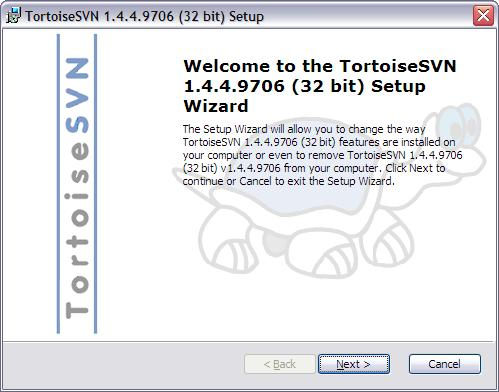
The customized setup screen can be modifed to enable the English (US) dictionary - the English (GB) dictionary does not need to be installed. (If you install a Translation pack, the dictionary for the specific language is also included.)
The dictionary is used for spell-checking of the messages window when performing check-ins.
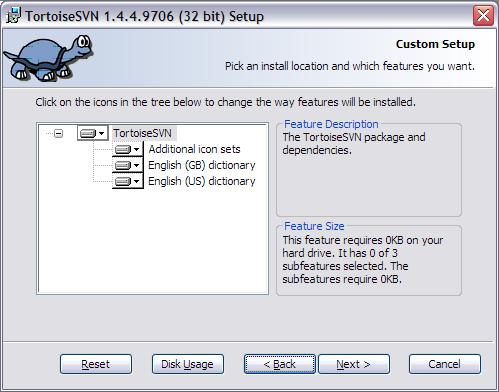
If you install multiple dictionaries, check the TortoiseSVN language settings. This is covered in the configuration steps below.
It should be noted that all messages should be in US English.
The minimum version for TortoiseSVN is 1.4.4, however, later versions should function correctly.
Note: While the installation program will present you with an option to restart the system, you may select the "Manual Restart", as restarting of the system is not required.
Configuration Steps
- Open a Windows File Explorer Window in the directory where you would like to do the checkout.
- Right-click somewhere in the background of that window.
- From the pop-up menu, select TortoiseSVN (If you install a Translation pack, the dictionary for the specific language is also included.)
- TortoiseSVN Settings
- General Tab
- Look and Feel -> Icon Overlays Tab
- Network Tab
Select your language using the drop down dialog.
We recommend that the Automatically check... feature be disabled.
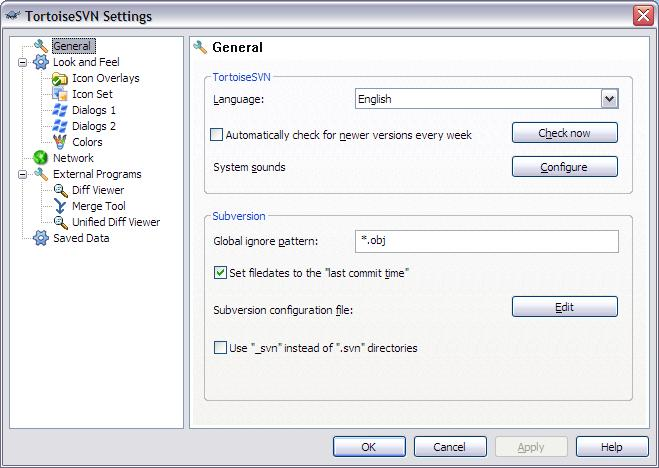
This page allows you to choose the items for which TortoiseSVN will display icon overlays.
Network drives can be very slow, so by default icons are not shown for working copies located on network shares.
Caching is done directly inside the shell extension dll, but only for the currently visible folder. Each time you navigate to another folder, the status information is fetched again.
Advantage: needs only very little memory (around 1 MB of RAM) and can show the status in realtime.
Disadvantage: Since only one folder is cached, the overlays don't show the status recursively. For big working copies, it can take more time to show a folder in explorer than with the default cache. Also the mime-type column is not available.
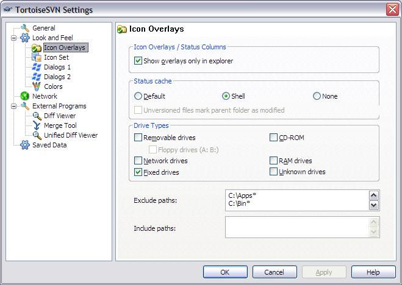
If you are behind a firewall, you need to configure your proxy settings. Configure the proxy as follows. (You may not get outside of your company firewall without a proxy.)
For Server address: replace myproxyserever.mycorp.com with the name of your company's proxy server.
For Port: entry the proxy port number used by your company. The example is using 911, your company may use a different port number.
The SSH client is not required, however, we recommend installing one for any command line access you may need in the future. In this example, the PuTTY SSH client has been installed in the folder: C:\Bin.
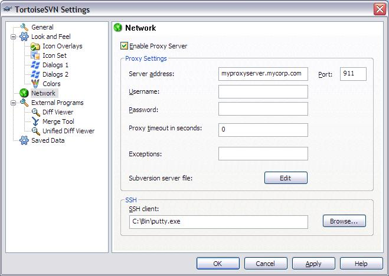
First Check-out Steps
- Right Click in the Explorer Window in the directory that you want the Edk2 source checked-out.
- Select SVN Checkout
- Fill in the URL of the repository in the Checkout Dialog
like so:
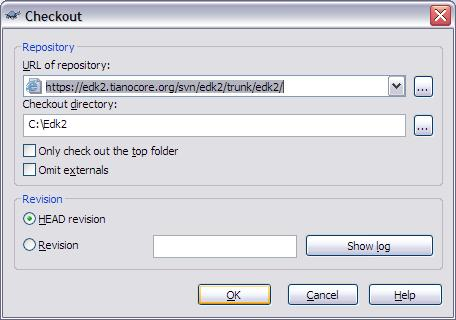
- The first time you access the repository, you might
be asked to accept, permanent, or reject the Security
Certificate. Always Accept permanent.
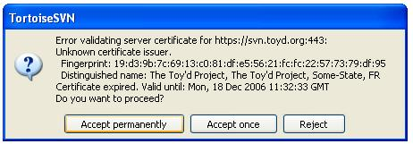Note: the above certificate is for a different server using TortoiseSVN. The EDK II server will be: https://edk2.tianocore.org:443:
Occasionally, the security certificate will be updated on this server, when it is, you will be queried with the same dialog box. - Prior to the checkout, an Authentication Dialog window will
open. You need to enter your Login name from TianoCore.org
and your TianoCore.org password.
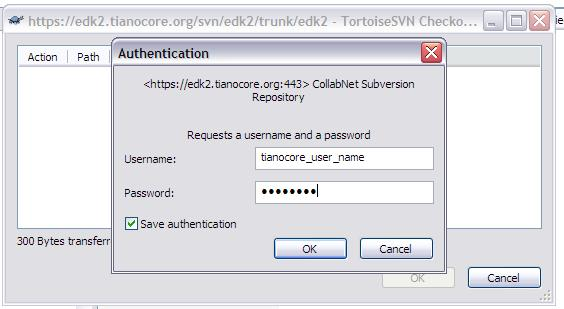
After a few seconds, the transfer will begin with status shown as
below.
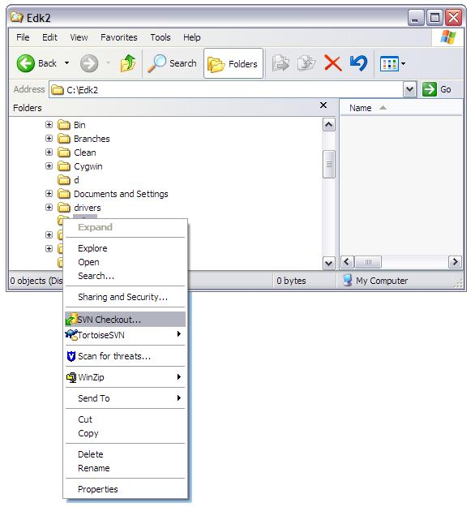
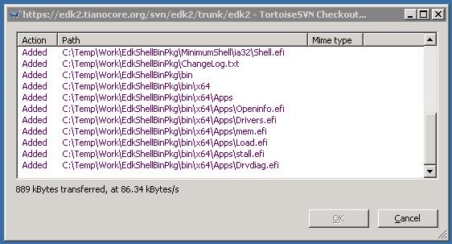
Congratulations, your TortoiseSVN setup is complete!
Install and Configure Windows Command Line Interface
The command line client will allow you to execute SVN commands
from the command prompt. This functionality permits access to
the source code repository from scripts.
After installing the command into a directory that is in the system environment variable: PATH (echo %PATH%), you will need to navigate to your home folder:
The file should look like the following (do not worry if you have to create a blank file, the content is very simple):
All lines in this file that start with the hash "#" character are comments that are ignored. You will need to add a few simple lines of text. (If the file was not created during the install, just add a [groups] line before all of the remaining lines in the file.)
After installing the command into a directory that is in the system environment variable: PATH (echo %PATH%), you will need to navigate to your home folder:
cd %HOMEPATH%
and, if not created by the installation, create a folder,
.subversion. Once
the .subversion folder exists, cd to that folder and using
your favorite text editor, edit the file: "servers"
(you may have to create this file). It must be a plain text
file, and it cannot have a file extension.The file should look like the following (do not worry if you have to create a blank file, the content is very simple):
All lines in this file that start with the hash "#" character are comments that are ignored. You will need to add a few simple lines of text. (If the file was not created during the install, just add a [groups] line before all of the remaining lines in the file.)
-
Locate the [groups] section and add the following two lines:
tianocore = *.tianocore.org
[tianocore]
-
Add the following two lines:
http-proxy-server = proxy.mycompany.com
http-proxy-port = 911
Your company's IT support should be able to provide you with the correct proxy server name and proxy port number.
-
Locate the [global] section and add the following line: (Note:
if you are creating a file, add a [globals] line, then add
the following.)
http-proxy-exceptions = *.mycompany.comA short servers file, created from scratch, should look like:
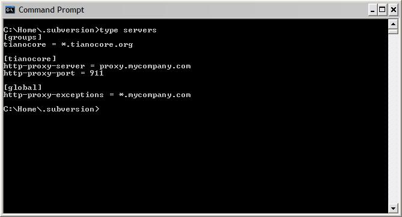
If you do not use SVN internally, the global section and the http-proxy-exceptions line can be omitted.
First Check-out Steps
- Open a command prompt window, change to the
directory where you want to checkout the EDK II tree and
type:
svn co https://edk2.tianocore.org/svn/edk2/trunk/edk2
- Select SVN Checkout
- The first time you access the repository, the SSL security
certificate will not validate, and you will be asked to
(R)eject, accept (t)emporarily or accept (p)ermanently?
Always accept permanently.
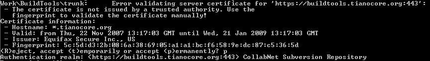
Occasionally, the security certificate will be updated on this server. Any time it gets updated, you will queried with the same dialog.
- You will be prompted for your username and password.
Use your tianocore.org login name and password. After a few
seconds, the transfer will begin with status shown as below.
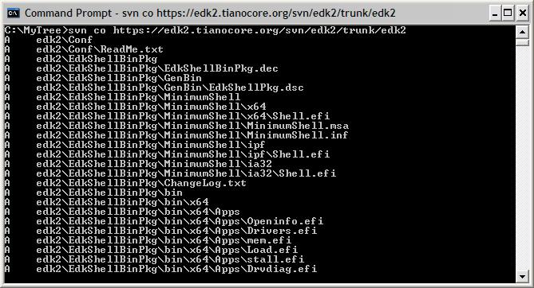
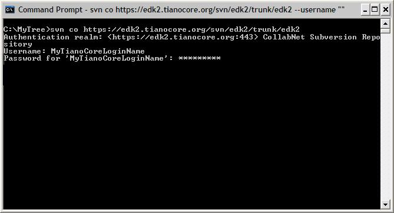
Congratulations, your Windows CLI setup is complete!
Install and Configure Command Line Interface (Linux & OS/X)
Follow your platform administration guide for installing the
subversion package (either a pre-built binary for your OS, or
sources.)
The command line client will allow you to execute SVN commands from a shell prompt as well as to access the source code repository from shell scripts.
After installing the command into a directory that is in the system environment variable: PATH (echo $PATH,) you will need to navigate to your home folder:
The file should look like the following (do not worry if you have to create a blank file, the content is very simple.):
All lines in this file that start with the hash "#" character are comments that are ignored. You will need to add a few simple lines of text. (If the file was not created during the install, just add a [groups] line before all of the remaining lines in the file.)
The command line client will allow you to execute SVN commands from a shell prompt as well as to access the source code repository from shell scripts.
After installing the command into a directory that is in the system environment variable: PATH (echo $PATH,) you will need to navigate to your home folder:
cd ~username
where username is your login name (your home directory) and,
if not created by the installation, create a folder,
.subversion. Once
the .subversion folder exists, cd to that folder and using
your favorite text editor, edit the file: "servers"
(you may have to create this file). It must be a plain text
file, and it cannot have a file extension.The file should look like the following (do not worry if you have to create a blank file, the content is very simple.):
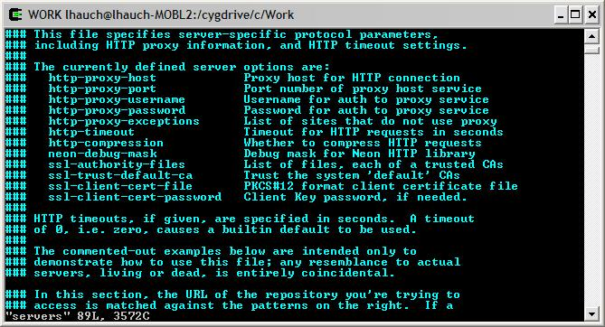
All lines in this file that start with the hash "#" character are comments that are ignored. You will need to add a few simple lines of text. (If the file was not created during the install, just add a [groups] line before all of the remaining lines in the file.)
-
Locate the [groups] section and add the following two lines:
tianocore = *.tianocore.org
[tianocore]
-
Add the following two lines:
http-proxy-server = proxy.mycompany.com
http-proxy-port = 911
Your company's IT support should be able to provide you with the correct proxy server name and proxy port number.
-
Locate the [global] section and add the following line: (Note:
if you are creating a file, add a [globals] line, then add
the following.)
http-proxy-exceptions = *.mycompany.comA short servers file, created from scratch, should look like:
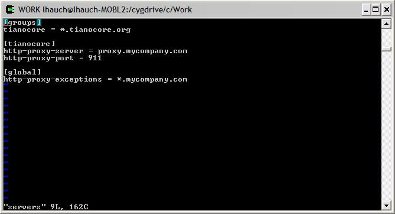
If you do not use SVN internally, the global section and the http-proxy-exceptions line can be omitted.
First Check-out Steps
- Open a command prompt window, change to the
directory where you want to checkout the EDK II tree and
type:
svn co https://edk2.tianocore.org/svn/edk2/trunk/edk2
- Select SVN Checkout
- The first time you access the repository, the SSL security
certificate will not validate, and you will be asked to
(R)eject, accept (t)emporarily or accept (p)ermanently?
Always accept permanently.
Occasionally, the security certificate will be updated on this server. Any time it gets updated, you will queried with the same dialog.
- You will be prompted for your username and password.
Use your tianocore.org login name and password. After a few
seconds, the transfer will begin with status shown as below.
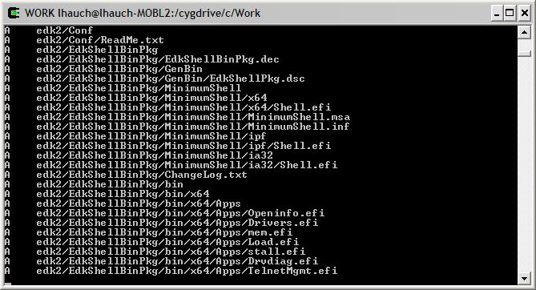
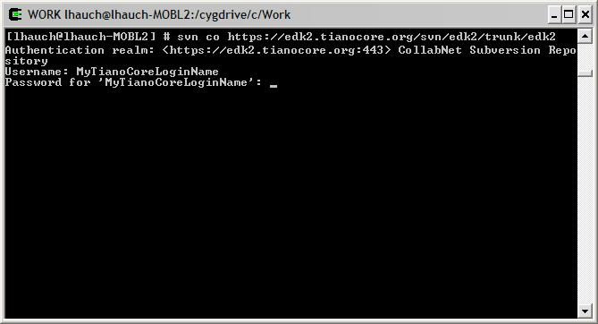